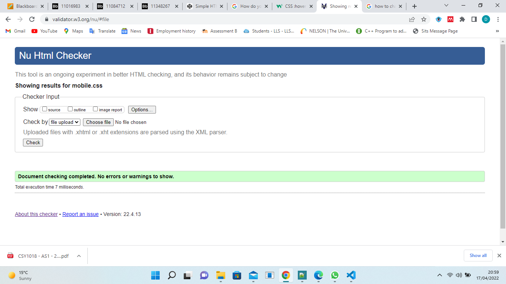
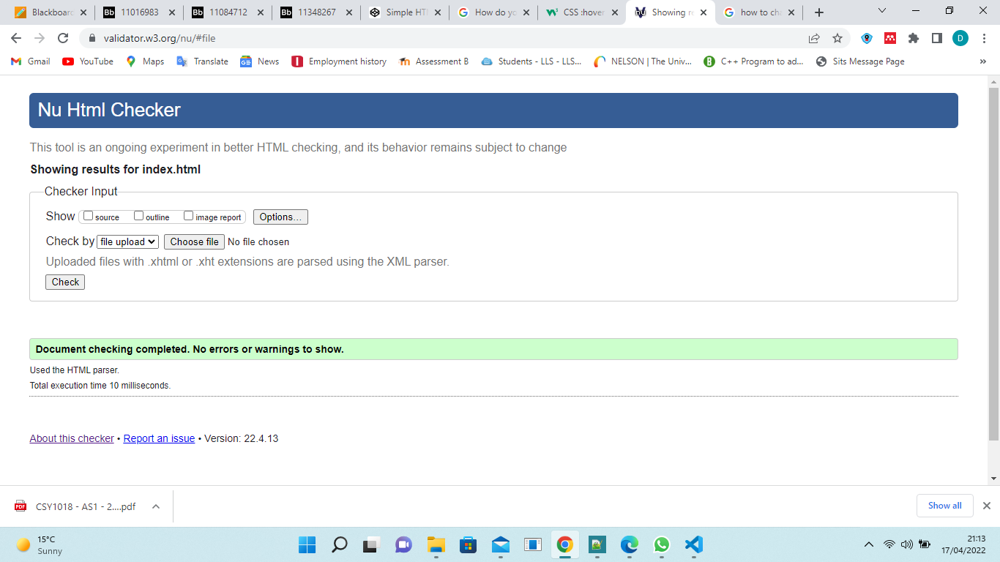
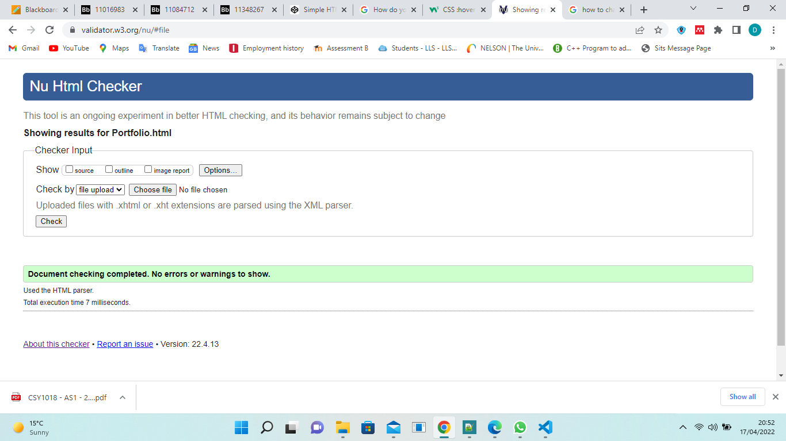
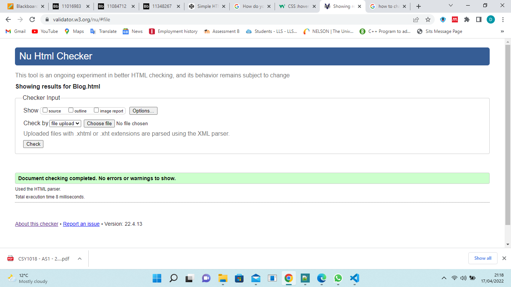
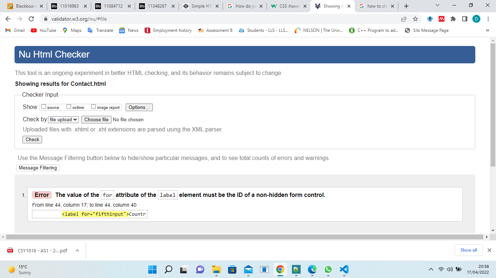

Wonderful experience Of CSY1018
I have love to learn and to adapt coding language as this is my first language which i learnt so far and i am glad that i have been learning from Northampton University as the tutor are way friendly and more happily to help whenever needed.
ON Web Development
I have made this assignmnet by going through the weekly slides of Web Development. Sometime it works and sometime dont, but as by going through the daily practices on work it makes easy and i learn just by practising.I have made totally five pages and all pages are working perfectly.
Validated All The Files





Go TO GitHUB Pages